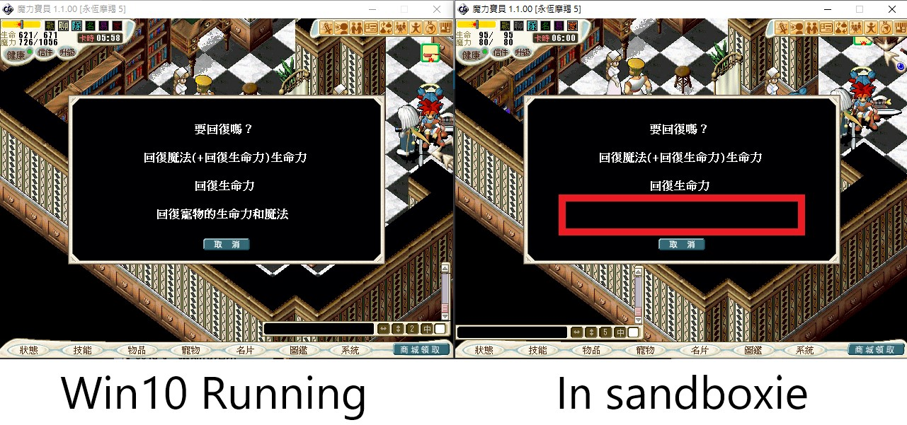
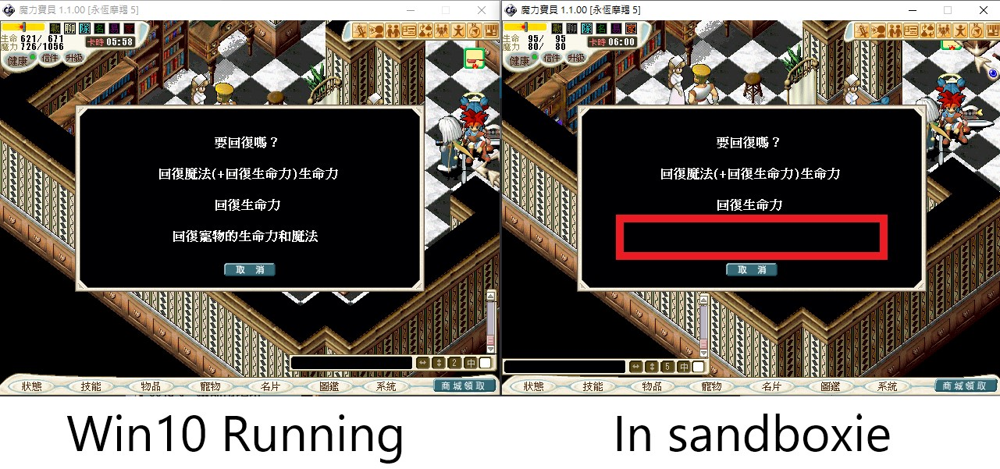

Old online game texts become black
Posted: Tue May 17, 2022 1:22 pm
hi everyone,
I play a game call "Crossgate" (クロスゲート, Kurosu Gēto) is a massively multiplayer online role-playing game, developed by Dwango and published by Square Enix (formerly Enix). It has been released in Japan, Taiwan, and Chinese Mainland since 2001.)
I used to play crossgate in sandboxie-plus with win7,it's all fine.
But few days ago,I installed win10,there was a problem when running in sandboxie.
"Partial texts would become black color"

OS version: win10 professional 21H2
Sandboxie-plus 1.0.20
In the right pic,the text in the red box just like disappeared.(black texts meet black background)
It's so annoying. I couldn't find some solutions.
Need help,thanks!
I play a game call "Crossgate" (クロスゲート, Kurosu Gēto) is a massively multiplayer online role-playing game, developed by Dwango and published by Square Enix (formerly Enix). It has been released in Japan, Taiwan, and Chinese Mainland since 2001.)
I used to play crossgate in sandboxie-plus with win7,it's all fine.
But few days ago,I installed win10,there was a problem when running in sandboxie.
"Partial texts would become black color"

OS version: win10 professional 21H2
Sandboxie-plus 1.0.20
In the right pic,the text in the red box just like disappeared.(black texts meet black background)
It's so annoying. I couldn't find some solutions.
Need help,thanks!